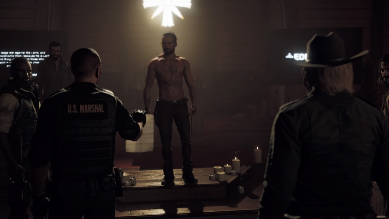
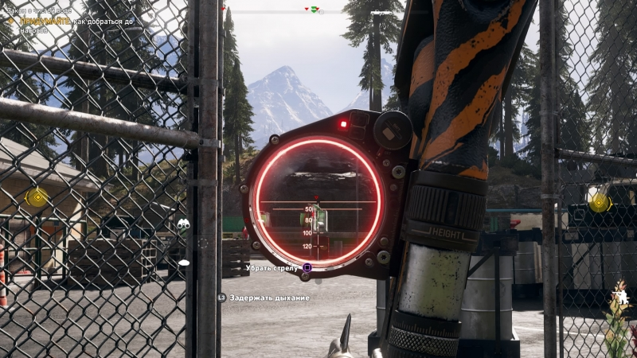
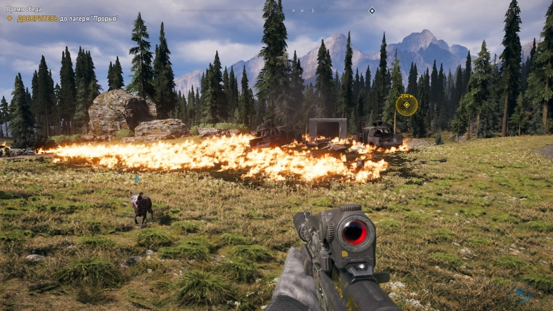

 Отец Иосиф Сид действительно получился ярким и в чем-то даже образцовым злодеем, каким его и показывали в трейлерах. Умный, расчетливый, не лезущий под пули и верящий в своих последователей (и бога, конечно) — он сразу производит впечатление сильного человека, причем сила его не в мускулах, а в интеллекте и огромной толпе почитателей, состоящих в проекте «Врата Эдема». Игрок берет на себя роль помощника шерифа и вместе с коллегами отправляется на поимку Сида. Но глупо было ожидать, что все пойдет по плану. Если не считать бонусную секретную концовку в духе Far Cry 4, исход оказывается плачевным — товарищи главного героя попадают в плен, а сам он сбегает и отправляется искать помощников для спасения друзей.
 Многое в пятой части сделано таким образом, чтобы игрок чувствовал себя активным участником происходящего. Поэтому, в частности, теперь можно создать персонажа любого пола и выбрать ему одежду, а не вживаться в очередного говорящего болванчика. Но самой интересной особенностью оказывается влияние ваших действий на диалоги с сюжетными персонажами. Если вы зачистили один из регионов и впервые отправились в новый, его обитатели уже будут знать о ваших заслугах и так или иначе затронут это в диалогах. Совершенные действия так здорово «вшиты» в разговоры (даже в локализованной версии), что в будущем хотелось бы видеть такую проработку диалогов и в других играх — к подобным контекстным репликам от случайных прохожих мы привыкли, а вот сюжетные герои обычно произносят одно и то же независимо от событий вокруг них.
